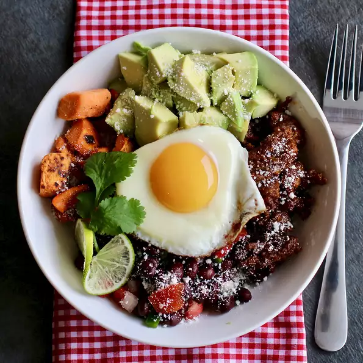

Ingredients
- 4 Roma tomatoes, diced
- ½ cup diced sweet onion
- ¼ cup chopped fresh cilantro
- 1 jalapeno pepper, seeded and minced
- 1 lime, juiced
- 1 teaspoon minced garlic
- ⅛ teaspoon garlic salt
- 1 (15.5 ounce) can black beans, rinsed and drained
- 3 tablespoons olive oil, divided
- 2 (10 ounce) bags frozen sweet potatoes
- salt and ground black pepper to taste
- 1 (1 pound) ground chorizo sausage
- 4 eggs
- 4 avocados, peeled and sliced
- ¼ cup crumbled Cotija cheese
- 1 teaspoon Mexican-style hot sauce (Optional)
Description
An easy to put together chorizo breakfast bowl with a south-of-the-border flavor.
Time: 45 min Servings: 4 Yield: 4 bowls
Nutrition Facts
Per Serving: 1092 calories; protein 40.2g; carbohydrates 77g; fat 73.3g; cholesterol 291.8mg; sodium 1705.2mg.Steps
- Combine tomatoes, onion, cilantro, jalapeno, lime juice, minced garlic, and garlic salt in a bowl; stir to combine. Transfer 1/2 cup pico de gallo to a second bowl and stir in black beans. Cover both bowls and set in the refrigerator.
- Heat 2 tablespoons olive oil in a large skillet over medium heat. Add sweet potatoes and season with salt and pepper. Cook and stir until browned and crispy, 15 to 20 minutes.
- Meanwhile, cook and stir chorizo in a second skillet over medium heat until browned and cooked through, about 10 minutes.
- Distribute cooked chorizo, sweet potatoes, black bean mixture, and avocado amongst 4 bowls. Sprinkle with Cojita cheese.
- Heat a nonstick skillet over medium heat. Add remaining 1 tablespoon olive oil. Crack eggs into the pan and cook until outer edges become opaque, about 1 minute. Cover the skillet and reduce heat to low. Cook until whites are set and yolks are set to your desired firmness, 4 to 6 minutes.
- Place an egg on top of each bowl. Serve with more pico de gallo and hot sauce.